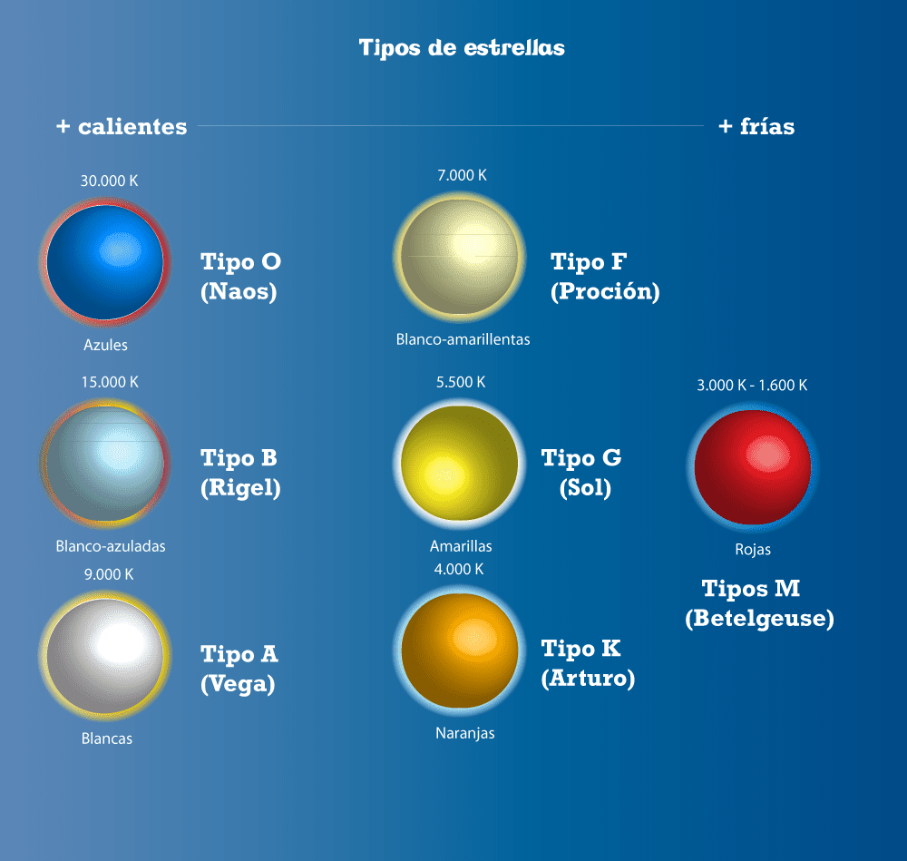
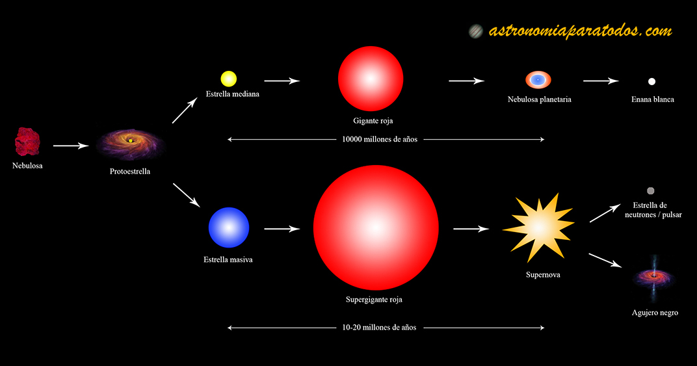

Cuando hablamos de las estrellas, nos referimos desde luego a esos puntitos brillantes que se observan en el firmamento cuando cae la noche. En realidad son grandes esferas luminosas compuestas de plasma. A pesar de hallarse en continua combustión, conservan su propia forma gracias a la enorme fuerza de gravedad que generan.
La estrella que mejor conocemos es el Sol, a la cual debemos la luz natural. Sin embargo, existen en el universo observable miles de millones de estrellas, aparentemente dispersas pero formando a su vez galaxias, orbitando un gran centro común de gravedad.
A pesar de que todas emiten distintos tipos de luz y de calor, apenas un pequeño porcentaje pueden ser captadas por el ojo humano, incluso con la ayuda de un telescopio. Alrededor de muchas de ellas también giran, como ocurre en nuestro Sistema solar, astros opacos como planetas, meteoritos o cometas, enganchados en su enorme gravedad.
Las estrellas han iluminado el universo durante miles de millones de años, guiando exploradores y desempeñando un papel fundamental en la formación de galaxias y planetas. En esta página, te invitamos a descubrir los secretos que esconden estos gigantes de fuego, desde su nacimiento hasta su espectacular final.
En esta página encontrarás información rápida y resumida como lo es; Fusión nuclear, Tipos de estrellas, Formación, Etapas y Final de una estrella.
Podrás encontrar la información de estos en los apartados de arriba que te mandarán a otras páginas de nuestro mismo sitio.

Tipos de Estrellas

Etapas de las Estrellas